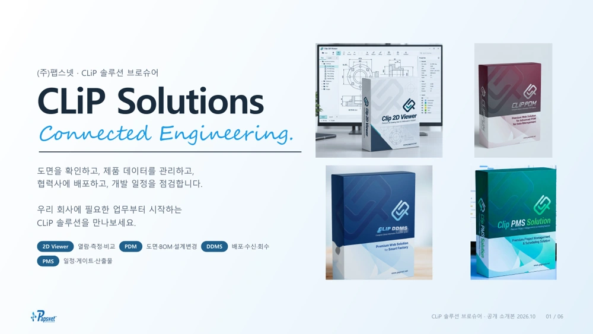
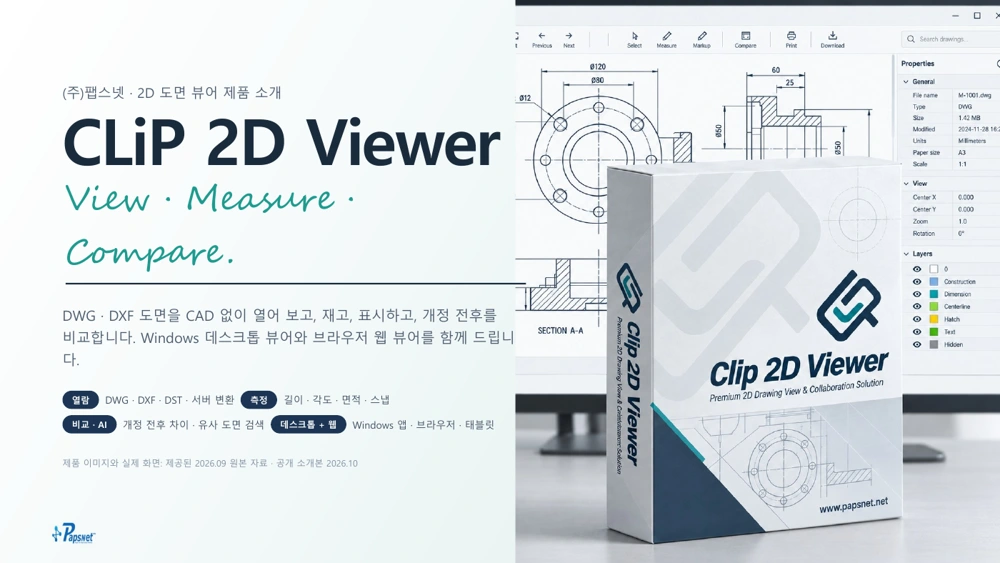
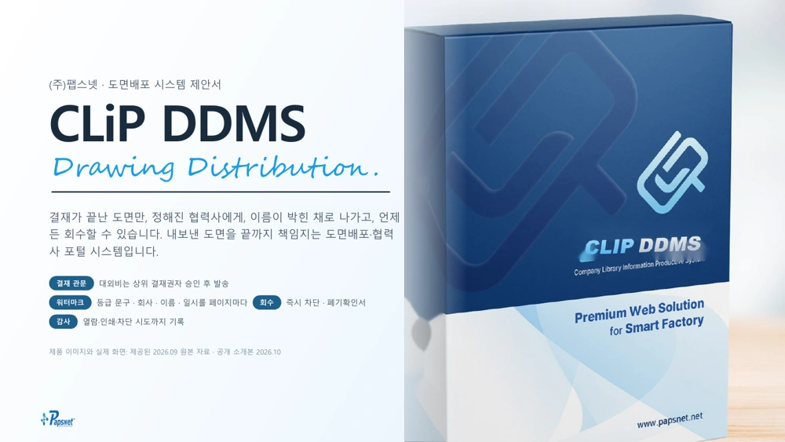
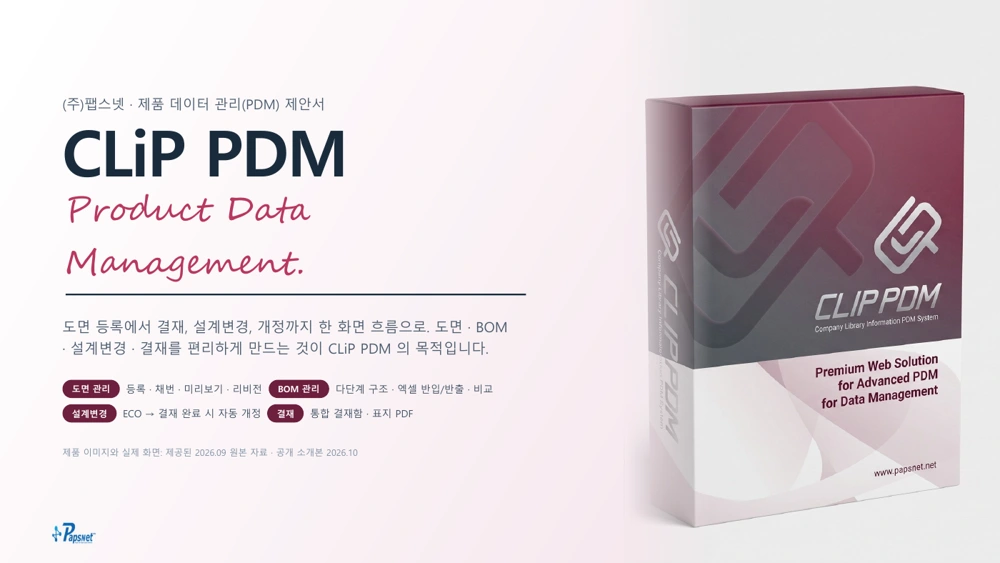
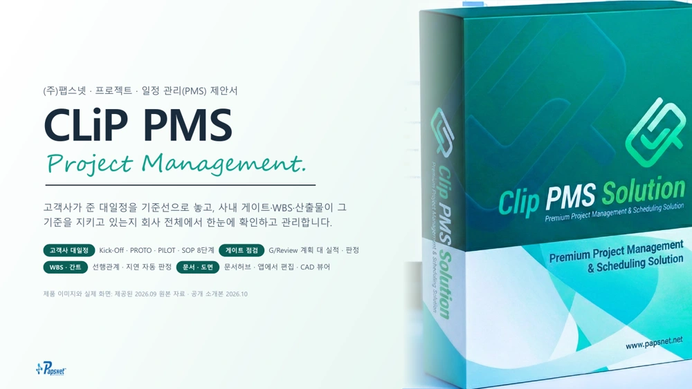

CLiP SOLUTIONS / RESOURCE LIBRARY
도면부터 개발 일정까지.
CLiP으로 연결하는
제품 개발 업무.
도면 검토부터 제품 데이터·협력사 배포·개발 일정까지.
실제 화면과 핵심 기능으로 필요한 솔루션을 살펴보세요.
CHOOSE YOUR WORK
지금 필요한 업무에서 시작하세요.
각 제품을 5페이지에 담았습니다. 상세 기능·연동·구축 범위는 데모 상담에서 확인하세요.

PRODUCT GUIDE · 5 PAGES
CLIP 2D Viewer
설계팀 밖에서도 도면을 직접 확인하도록. 열람·측정·주석·비교를 하나의 검토 흐름으로.
- 핵심 기능과 실제 제품 화면
- 업무 적용 흐름과 상담 안내

PRODUCT GUIDE · 5 PAGES
CLiP DDMS
승인된 도면의 전달부터 수신확인과 회수까지. 협력사와의 도면 배포를 기록으로 연결합니다.
- 핵심 기능과 실제 제품 화면
- 업무 적용 흐름과 상담 안내

PRODUCT GUIDE · 5 PAGES
CLiP PDM
도면·BOM·설계변경·결재를 연결해 제품 데이터의 기준과 변경 이력을 관리합니다.
- 핵심 기능과 실제 제품 화면
- 업무 적용 흐름과 상담 안내

PRODUCT GUIDE · 5 PAGES
CLiP PMS
고객 마일스톤·WBS·간트·게이트 점검을 연결해 개발 일정과 산출물의 진행을 확인합니다.
- 핵심 기능과 실제 제품 화면
- 업무 적용 흐름과 상담 안내
2026.10 공개 소개본 · 화면은 실제 제품에서 발췌했으며 일부 식별정보를 비공개 처리했습니다. 기능 제공 범위는 버전과 도입 구성에 따라 확인합니다.
LET’S TALK ABOUT YOUR WORK
자료에서 발견한 질문,
실제 업무로 확인해 보세요.
회사명, 관심 제품, 현재 업무와 회신 가능한 연락처를 남겨주세요.
상세 자료와 데모 범위를 담당자가 안내합니다.